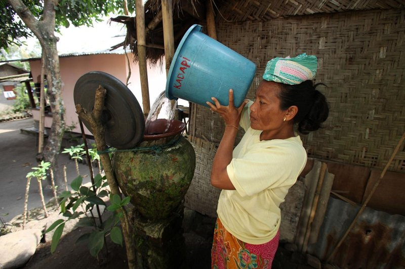
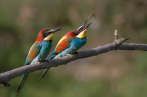
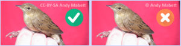

Kiat praktis mencantumkan lisensi Creative Commons untuk fotografer

.jpg){kind=link}
Bagaimana Anda memperoleh air minum? Di Australia saya ditertawakan ketika saya menadah air keran dan memasaknya sebelum saya minum. Saat itu saya lupa bahwa air yang mengalir di kerannya sudah aman untuk diminum dengan kualitas yang baik.
Apa hubungan air minum dengan lisensi hak cipta Creative Commons? Seperti air, karya setelah diciptakan butuh saluran sebelum bisa dibagikan dan dikonsumsi. Karena lisensi Creative Commons lahir dari semangat berbagi dan keterbukaan, semangatnya tidak berhenti hanya dalam aktivitas berbagi, namun mengupayakan kualitas yang terbaik saat dibagi. Teorinya adalah, Anda dapat menemukan air kotor dimana-mana, atau air bersih yang dijual, namun pada umumnya untuk jadi produktif, orang menginginkan air bersih dengan kualitas yang baik dan murah.
Banyak fotografer Indonesia sebenarnya senang senang saja untuk membagikan karyanya di berbagai medium, tidak melulu fotografer mengambil gambar untuk dijual. Namun seluruh fotografer, tanpa kecuali, tidak ingin karya mereka diaku oleh orang lain.
Teknologi internet dan media sosial membuat banyak orang produktif. Mereka ingin menggunakan kembali musik dengan kualitas suara yang baik, gambar dengan resolusi tinggi, dan karya cipta lainnya untuk digunakan dalam karya mereka.
Sebagian produsen karya ini adalah pencinta alam, mereka senang berbagi karyanya di media sosial. Karena saya senang menulis tentang Indonesia, saya ingin memberi ilustrasi menggunakan gambar-gambar dengan konteks lokal atau karya lokal, karena itu saya bersemangat melihat karya-karyanya.

{kind=link}
Banyak fotografer Indonesia sebenarnya senang senang saja untuk membagikan karyanya di berbagai medium, tidak melulu fotografer mengambil gambar untuk dijual. Individu-individu yang senang berbagi ini yang menjadikan lisensi Creative Commons berfungsi di dunia nyata. Namun seluruh fotografer, tanpa kecuali, tidak ingin karya mereka diaku oleh orang lain.
Ada kebiasaan yang sama diantara fotografer untuk mencantumkan tanda (watermark) sebelum dibagiakan di media sosial sebagai tanda bahwa foto tersebut miliknya. Lalu penanda juga berfungsi sebagai pemberitahuan gambar “diambil oleh” dengan mencantumkan ©namafotografer.
Pencantuman tanda ini baik, mengingat kasus di Indonesia khususnya umum terjadi dua hal yang berbeda.
- Pengguna ulang lalai mencantumkan nama pencipta, dimana sumber diberikan seperti “Wikipedia”, “google”, “berbagai sumber”. Ini artinya pembagi adalah orang yang mengetahui kaedah pengutipan namun malas mencari tahu pasti sumbernya dengan berbagai alasan. Pencantuman ini adalah pencantuman keliru karena baik Wikipedia ataupun Google tidak pernah menciptakan gambar/ tulisan tersebut.
- Pengguna ulang melakukan tindakan kriminal dengan mengambil alih gambar dan mengaku bahwa ia yang menciptakan. Tindakan ini adalah murni tindakan kriminal dan sanksinya diatur dalam Undang Undang Hak Cipta No. 28 Tahun 2014 dengan berbagai sanksi pidana dan perdata.
Kembali pada penanda ©namafotografer, tanpa disadari pencantuman tanda © memiliki arti “Semua Hak Dipertahankan”. Tanda ini meniadakan kesempatan untuk orang lain membagikan ulang karya cipta seseorang tanpa ijin tertulis dan rintangannya adalah berbagai ganjaran hukum perdata dan pidana. Berdasarkan UU hak Cipta 2014, tanda “semua hak dipertahankan” sama dengan pencipta menahan karyanya untuk disebarluaskan tanpa ijin tertulis hingga 70 tahun setelah kematian pencipta.
Efek samping hak yang dipertahankan ini membuat banyak sekali karya di Indonesia terkubur dalam medium yang sudah kadaluarsa (disket, kertas yang menjadi lapuk, dsb) dan tidak bisa digunakan kembali atau dipublikasikan dikarenakan penciptanya tidak diketahui masih hidup/ tidak ataupun lokasi “rimba”-nya.

Gambar diatas adalah ilustrasi gambar burung untuk pencipta yang menganut paham “Some Rights Reserved” (Beberapa Hak Dipertahankan). Sebagai pencipta, apabila Anda fotografer, Anda dapat memanfaatkan lisensi terbuka seperti lisensi Creative Commons untuk menginformasikan kepada kemungkinan pengguna bahwa pencipta mengizinkan penggunaan terhadap ciptaannya dengan syarat atau batasan tertentu. Untuk penggunaan gambar burung/ kupu-kupu/ tanaman yang Anda ambil sebagai ilustrasi artikel Wikipedia, misalnya, dibutuhkan lisensi terbuka CC-BY.
Apabila Anda ingin berbagi karya, format yang disarankan adalah CC-BY @pigsonthewing dan bukan ©pigsonthewing
Disarankan apabila anda memiliki akun media sosial untuk mulai membagikan gambar beserta penanda yang merujuk balik pada penciptanya (Anda) ke akun twitter atau facebook. Contoh diatas Andy bisa sama memberi tanda CC-BY @pigsonthewing yang akan membawa pengguna kepada akun twitter Andy.
Lisensi ini juga melindungi Anda dari kasus kedua, dimana apabila gambar Anda diaku ulang oleh orang lain, lisensi Creative Commons dapat melindungi hak Anda, karena lisensi ini diakui sebagai lisensi yang sah oleh UU Hak Cipta tahun 2014. Jadi, mari mulai berpikir jangka panjang untuk karya karya Anda agar dapat menjadi manfaat untuk semua.
Tags:
Oleh: Siska Doviana
29 Jul 2016Kategori:
Berita Terbaru
- Lokakarya Hak Cipta dan Lisensi Creative Commons di Pekanbaru
- Pengumuman Resmi: Hasil Akhir Training of Trainers Creative Commons Indonesia
- Literatur tentang Model Bisnis Terbuka "Made With CC"
- Data dan Artikel Ilmiah Terbuka dari PLOS!
- Konten Format Model 3 Dimensi Berilsensi CC di Platform Sketchfab